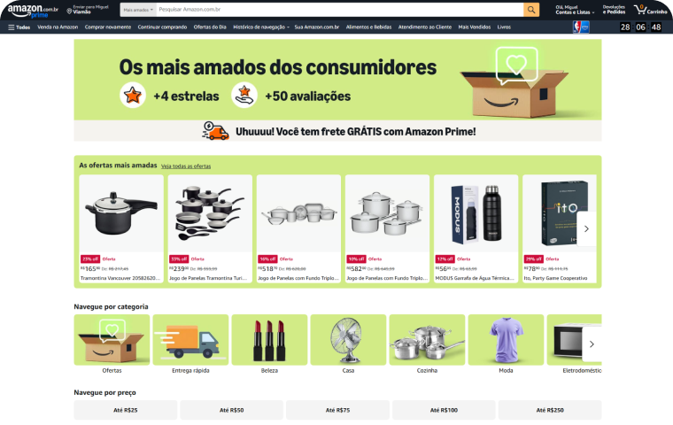
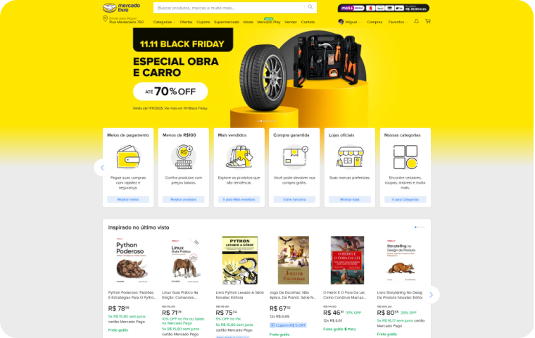
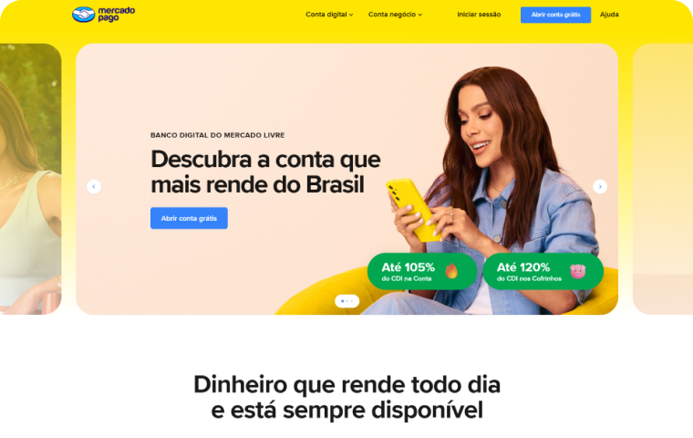

Context
The project started with an alignment kick-off with Caixa's Product Owners (POs), as this payment gateway integration was a completely new feature on the platform. The business goal was to expand user options, but the UX challenge was complex: how to "stitch" the screens and business rules of Caixa's legacy system with the external flows of Mercado Pago and Recarga Pay?
The Past
The redemption experience was limited and inflexible. The user had only three options to retrieve the value: in person at a Lottery Agency, at a Caixa branch, or via bank transfer. Besides being confusing, this flow had unclear rules, such as only the CPF holder could redeem or specific QR Code scanning requirements.
Solution
My role was to absorb this vision, map the new flows (including all error and validation scenarios), and design a unified payment journey, ensuring that the transition between different systems was fluid and, for the end user, seemed like a single, continuous experience.
Summary
Create a unified interface that served as a visual layer over the gateways. The goal was to ensure that the user felt they were still in the store's secure environment, regardless of choosing to pay with Mercado Pago or Recarga Pay.
The Problem
The payment platform was limited to traditional Caixa methods, generating a high complaint rate from users. The lack of options and possibilities resulted in confusion when players tried to receive their prizes.
Key Frictions Identified
- ⛔ Visual Inconsistency Buttons and inputs with different styles for each method, breaking brand identity.
- ⛔ Confusing Feedback The user was left in the dark not knowing if the payment was approved or still processing.
- ⛔ Excessive Steps Multiple screen redirects increased checkout time and the chance of abandonment.
- ⛔ Generic Errors Lack of clarity on the reason for refusal (e.g., balance vs. system error), preventing sales recovery.
- ⛔ Data Loss The form erased information if the user needed to go back a step to correct something.
- ⛔ Trust Breach Abrupt layout change when going to the gateway made the user feel they had left the secure environment.
What happened in the project.
- Analysis of Similars and Benchmarks: We conducted research to understand how competitors and other companies are dealing with challenges similar to ours;
- OKR Definition: We aligned the project's objectives and key results to ensure we are on the right track;
- User Flow Mapping: We detailed all the steps the user will go through in the system, both on desktop and mobile;
- Desktop and Mobile Flow Adaptation: We adjusted the flows to ensure they work perfectly on different devices;
- Interactive Prototype Creation: We developed an interactive model to test and validate design solutions before implementation;
- Review and Handoff with Devs: We made final adjustments and passed the project to the development team, with all necessary specifications;
- Project Metrics Analysis: We evaluated the results achieved to understand the impact of design solutions;
- Participation in Scrum Ceremonies: We actively participated in daily meetings, reviews, and retrospectives, collaborating with other project teams;
- Deliverable Documentation: We produced necessary documents, such as prototypes, design specifications, and style guides, so the development team had all necessary information.
Benchmark
To design the new Caixa payment experience, we conducted a benchmark analysis comparing the legacy flow with leaders in e-commerce and fintechs: Amazon, Mercado Livre, PagSeguro, and Mercado Pago.
The goal was to identify best practices in two key points:
Payment Orchestration: How they present multiple options (Pix, Balance, Cards) clearly and hierarchically.
Friction Reduction: How they build trust and simplify the journey to maximize conversion and reduce cart abandonment.
Amazon
Mercado Livre
PagSeguro

Mercado Pago
Scenario Mapping
To ensure a robust integration, we mapped and prototyped every possible interface state, covering purchase flows and the specificities of redemption flows for both gateways.
🛍️ Purchase and Cards Journey
-
No card registered
-
No card registered
-
1 card registered (debit not authorized)
-
2 cards registered (Processing)
-
1 card registered
-
Multiple cards with scroll (Edit/Cancel)

-
Cart: Purchase details

-
My saved cards

💰 Redemption Journey
-
With existing account
-
Without account
-
Account does not exist (Error)
-
With existing account
-
Without account
-
Account does not exist (Error)
Purchase and Cards Journey
With the structure and flows validated in the previous step, it was time to apply the final visual layer. The mission here was to transform a complex technical integration into something simple and invisible to the user.
The big challenge of high-fidelity prototypes was to create a single interface that "dressed" both gateways. The goal was to ensure that, whether paying with Mercado Pago or Recarga Pay, the person felt they were always in the same secure and familiar environment, without scares or abrupt design changes.
Important: To organize the portfolio presentation, I divided the final result into two main user journeys: the Purchase Journey (adding money) and the Redemption Journey (withdrawing prizes). The screens below are a representative selection; the complete project involved detailed design of dozens of variations, including all error states and alternative flows for both partners.

Redemption Journey
For prize and value withdrawals, the visual priority shifted to transparency. Unlike purchase, where familiarity with the gateway was vital, here the user needs absolute clarity about the status of their request.
I designed flows that keep the user informed in real-time, using the same unified visual language to avoid the feeling of disruption. The result is a frictionless redemption process, where the interface guides the user safely from value selection to final transfer confirmation.

Mobile
Checkout Mobile: Fluidity in the Palm of Your Hand
Adapting the payment journey for the mobile context required an absolute focus on friction reduction. We know that typing data on small screens is a conversion barrier, so I designed an interface with optimized fields, automatic numeric inputs, and clear visual feedbacks at each step.
The goal was to create a linear flow where the user never feels lost. Whether via credit card or digital wallet, the interface guides the user with large and accessible buttons (in the thumb reach zone), ensuring the transaction is completed safely and with minimal cognitive effort.
Talk to Me!
If you have an idea, a job opportunity, or just want to chat, send me a message.